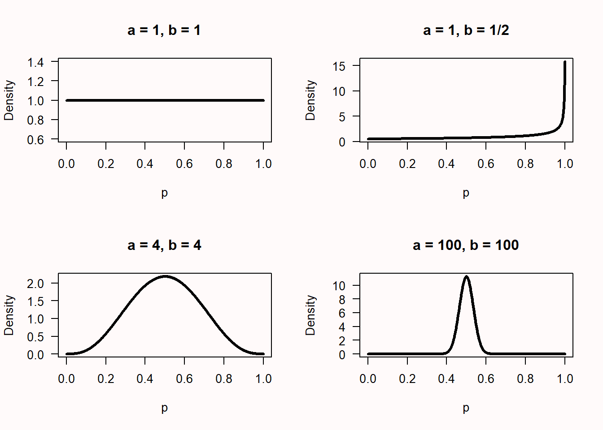
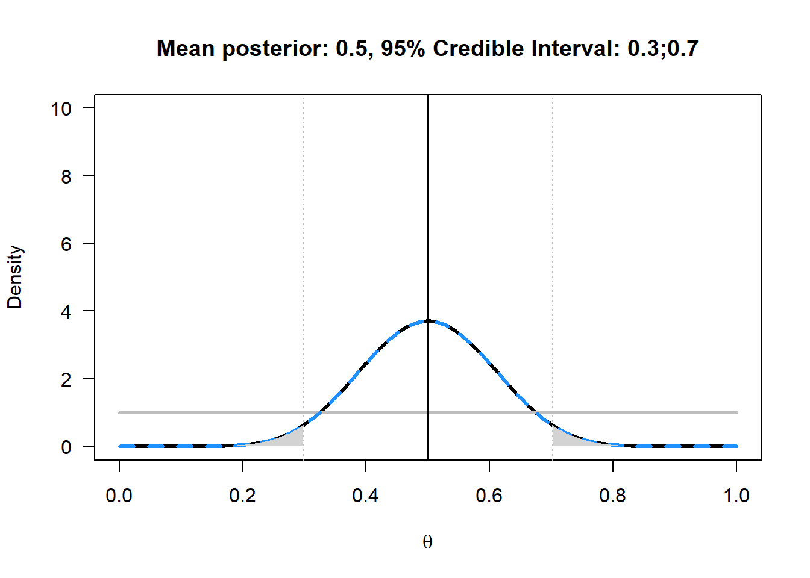

4 Bayesian statistics
“Logic!” said the Professor half to himself. “Why don’t they teach logic at these schools? There are only three possibilities. Either your sister is telling lies, or she is mad, or she is telling the truth. You know she doesn’t tell lies and it is obvious that she is not mad. For the moment then and unless any further evidence turns up, we must assume that she is telling the truth.”
The Lion, The Witch, and The Wardrobe. A Story for Children by C. S. Lewis.
In the children’s book The Lion, The Witch, and The Wardrobe, both Lucy and Edmund go through a wardrobe into a country called Narnia. Lucy tells her older brother and sister, Peter and Susan, about Narnia, but Edmund wants to keep it a secret, and tells Peter and Susan he and Lucy were just pretending Narnia exists. Peter and Susan don’t know what to believe - does Narnia exist, or not? Is Lucy telling the truth, or is Edmund? Thinking about probabilities in the long run will not help much - this is a unique event, and we will need to think about the probability that Narnia exists, or not, based on the information we have available.
They ask the Professor, who lives in the house with the wardrobe, for advice. The Professor asks Susan and Peter if in their past experience, Lucy or Edward has been more truthful, to which Peter answers “Up till now, I’d have said Lucy every time.” So, they have a stronger prior belief Lucy is telling the truth, relative to Edward telling the truth. The Professor then replies with the quote above. From the three possible options, we don’t believe Lucy is lying, as she has not done so in the past, and the Professor believes it is clear just from talking to Lucy that she is not mad. Therefore, the most plausible option is that Lucy is telling the truth. If new evidence is uncovered, these beliefs can be updated in the future. This approach to knowledge generation, where the prior probability of different hypotheses is quantified, and if possible updated in light of new data, is an example of Bayesian inference.
Although frequentist statistics is by far the dominant approach in science, it is important to have had at least rudimentary exposure to Bayesian statistics during any statistics training. Bayesian statistics is especially useful when inferences are made in cases where the data under investigation is unique, and there is no frequentist probability defined as the limit in many trials. For example, the question might not be how often Lucy lies on average, but whether Lucy is lying in this specific instance about the existence of Narnia. When we do research, we often start with a prior belief that a hypothesis is true. After collecting data, we can use this data to update our prior beliefs. Bayesian statistics allows you to update prior beliefs into posterior probabilities in a logically consistent manner. Before we have collected data, the prior odds of Hypothesis 1 (\(H_1\)) over the null-hypothesis (\(H_0\)) are P(\(H_1\))/P(\(H_0\)), After we have collected data, we have the posterior odds P(\(H_1\)|D)/P(\(H_0\)|D), which you can read as the probability of \(H_1\), given the data, divided by the probability of \(H_0\), given the data. There are different approaches to Bayesian statistics. We will first discuss Bayes factors, and then Bayesian estimation.
4.1 Bayes factors
One approach in Bayesian statistics focuses on the comparison of different models that might explain the data (referred to as model comparison). In Bayesian statistics, the probability of data under a specified model (P|D(\(H_0\)) is a number that expressed what is sometimes referred to as the absolute evidence, and more formally referred to as a marginal likelihood. The marginal likelihood uses prior probabilities to average the likelihood across the parameter space. For example, assume we have a simple model M that is based on a single parameter, that can take on two values, X and Y, and that a-prior we believe the probability of both values is p(X) = 0.4 and p(Y) = 0.6. We collect data, and calculate the likelihood for both these parameter values, which is p(D|X) = 0.02 and p(D|Y) = 0.08. The marginal likelihood of our model M is then P(D|M) = 0.4 × 0.02 + 0.6 × 0.08 = 0.056. Most often, models have continuously varying parameters, and the marginal likelihood formula is based on an integral, but the idea remains the same.
A comparison of two models is based on the relative evidence the data provides for each models we are comparing. The relative evidence is calculated by dividing the marginal likelihood for one model by the marginal likelihood for another model, and this ratio of relative evidence based on these marginal likelihoods is called the Bayes factor. Bayes factors are the Bayesian equivalent of hypothesis tests (Dienes, 2008; Kass & Raftery, 1995). The Bayes factor represents how much we have updated our beliefs, based on observing the data. We can express Bayes factors to indicate how much more likely \(H_1\) has become given the data compared to \(H_0\) (often indicated by B10) or as how much more likely \(H_0\) has become compared to \(H_1\) (B01), and B10 = 1/B01. Similar to likelihood ratios of 1, a Bayes factor of 1 does not change our beliefs in favor of one model compared to the other model. A very large Bayes factor for \(H_1\) over \(H_0\) increases our belief in \(H_1\) relative to \(H_0\), and a Bayes Factor close to 0 increases our belief in \(H_0\) relative to \(H_1\). If our prior belief in \(H_1\) was very, very low (e.g., your belief in unicorns) even a large Bayes Factor that supports the presence of a unicorn might not yet convince you that unicorns are real – but you have updated your belief in unicorns, and now believe they are at least more likely then they were before (even if you still think unicorns are very unlikely to exist). The contribution of the Bayes Factor and the prior in calculating the posterior odds is clear in the following formula:
\[ \frac{P(H_1|D)}{P(H_0|D)} = \ \frac{P(D|H_1)}{P(D|H_0)}\ \times \ \frac{P(H_1)}{P(H_0)} \]
\[ Posterior\ Probability = \ Bayes\ Factor\ \times \ Prior\ Probability \]
A Bayesian analysis of data requires specifying the prior. Here, we will continue our example based on a binomial probability, such as a coin flip. In the likelihood example, we compared two point hypotheses (e.g., p = 0.5 vs. p = 0.8). In Bayesian statistics, parameters are considered to be random variables, and the uncertainty or degree of belief with respect to the parameters is quantified by probability distributions.
A binomial probability lies between 0 and 1. You could draw any probability density you want over 0 and 1, and turn it into a prior, but for good reasons (simplicity, mostly) a beta-prior is often used for binomial probabilities. The shape of the beta-prior depends on two parameters, \(\alpha\) and \(\beta\). Note that these are the same Greek letters as used for the Type 1 error rate and Type 2 error rate, but that is purely coincidental! The \(\alpha\) and \(\beta\) in binomial probabilities are unrelated to error rates, and the use of the same letters is mainly due to a lack of creativity among statisticians and the limited choice the alphabet gives us. It also does not help that \(\beta\) is one of the parameters of the Beta distribution. Try to keep these different Beta’s apart! The probability density function is:
\[ f{}^{}{\left(x;\ \alpha,\ \beta \right) = \ \frac{1}{B(\alpha,\beta)}}x^{\alpha - 1}{(1 - x)}^{\beta - 1} \]
where B(\(\alpha\), \(\beta\)) is the beta function. Understanding the mathematical basis of this function is beyond the scope of this chapter, but you can read more on Wikipedia or Kruschke’s book on Doing Bayesian Data Analysis (Kruschke, 2014). The beta-prior for a variety of values for \(\alpha\) and \(\beta\) can be seen in Figure 4.1.
These beta densities reflect different types of priors. Let’s assume you are approached by a street merchant who tries to sell you a special coin with heads and tails that, when flipped, will almost always turn up heads. The \(\alpha\) = 1, \(\beta\) = 1 prior is what a newborn baby would have as a prior, without any idea of what to expect when you flip a coin, and thus every value of p is equally likely. The \(\alpha\) = 1, \(\beta\) = 1/2 prior is what a true believer would have as a prior. The sales merchant tells you the coin will turn up heads almost every time, and thus, you believe it will turn up heads almost every time. The \(\alpha\) = 4, \(\beta\) = 4, and the \(\alpha\) = 100, \(\beta\) = 100 priors are for slightly and extremely skeptical people. With an \(\alpha\) = 4, \(\beta\) = 4 prior, you expect the coin will be fair, but you are willing to believe a wide range of other true values is possible (the curve is centered on 0.5, but the curve is wide, allowing for very high and low values of p). With the \(\alpha\) = 100, \(\beta\) = 100 prior you are really convinced coins are fair, and believe there will be only a very slight bias, at most (the curve is again centered on 0.5, and a skeptic believes the p will lie between 0.4 and 0.6 – a much narrower range compared to the slightly skeptic individual).
Let’s assume the newborn baby, the true believer, the slightly skeptic and the extreme skeptic all buy the coin, flip it n = 20 times, and observe x = 10 heads. This outcome can be plotted as a binomial distribution with 10 heads out of 20 trials, or as a Beta(11, 11) distribution.
The newborn baby had a prior Beta distribution with \(\alpha\) = 1 and \(\beta\) = 1, which equals a binomial likelihood distribution for 0 heads out of 0 trials. The posterior is a Beta distribution with Beta(\(\alpha\)*, \(\beta\)*), where:
\(\alpha\)* = \(\alpha\) + x = 1 + 10= 11
\(\beta\)* = \(\beta\) + n – x = 1 + 20 – 10 = 11
Or calculating these values more directly from the \(\alpha\) and \(\beta\) of the prior and likelihood:
\(\alpha\)* = \(\alpha\)prior + \(\alpha\)likelihood – 1 = 1 + 11 - 1= 11
\(\beta\)* = \(\beta\)prior + \(\beta\)likelihood - 1 = 1 + 11 – 1 = 11
Thus, the posterior distribution for the newborn is a Beta(11,11) distribution. This equals a binomial likelihood function for 10 heads out of 20 trials, or Beta(11,11) distribution. In other words, the posterior distribution is identical to the likelihood function when a uniform prior is used.
Take a look at Figure 4.2. Given 10 heads out of 20 coin flips, we see the prior distribution of the newborn (the horizontal grey line), the likelihood (the blue dotted line) and the posterior (the black line).

For the true believer the posterior distribution is not centered on the maximum likelihood of the observed data, but just a bit in the direction of the prior. The slightly skeptic and the strong skeptic end up with a much stronger belief in a fair coin after observing the data, but mainly because they already had a stronger prior that the coin was fair.
4.2 Updating our belief
Now that we have a distribution for the prior, and a distribution for the posterior, we can see in the graphs below for which values of p our belief has increased. Everywhere where the black line (of the posterior) is higher than the grey line (of the prior) our belief in that p has increased.

The Bayes Factor is used to quantify this increase in relative evidence. Let’s calculate the Bayes Factor for the hypothesis that the coin is fair for the newborn. The Bayes Factor is simply the value of the posterior distribution at p = 0.5, divided by the value of the prior distribution at p = 0.5:
BF10 = Beta(p = 0.5, 11, 11)/Beta(p = 0.5, 1, 1) = 3.70/1 = 3.70
We can calculate and plot the Bayes Factor, and show the prior (grey), likelihood (dashed blue) and posterior (black). For the example of 20 flips, 10 heads, and the newborn prior, the plot looks like this:

We see that for the newborn, p = 0.5 has become more probable, but so has p = 0.4. Now let’s assume the strong skeptic, who believes the coin is fair with a prior of Beta(100, 100), buys the coin and flips it 100 times. Surprisingly, the coin comes up heads 90 out of 100 flips. The plot of the prior, likelihood, and posterior now looks much more extreme, because we had a very informed prior, and extremely different data. We see the grey prior distribution, the dashed blue likelihood based on the data, and the posterior distribution in black. The Bayes Factor of 0 (note that the value is rounded, and is extremely small, but not exactly zero) - represents the substantial drop in belief that the coin is fair – indeed, this now seems an untenable hypothesis, even for the strong skeptic. It shows how data can update your belief. Where a newborn would now completely believe that the true p for the coin is somewhere around 0.9, the strong skeptic has more reason to believe the p is around 0.65, due to the strong prior conviction that the coin is fair. Given enough data, even this strong skeptic will become convinced that the coin will return heads most of the time as well.

We can now also see the difference between a likelihood inference approach, and a Bayesian inference approach. In likelihood inference, you can compare different values of p for the same likelihood curve (e.g., p = 0.5 vs p = 0.8) and calculate the likelihood ratio. In Bayesian inference, you can compare the difference between the prior and the posterior for the same value of p, and calculate the Bayes Factor.
If you have never seen Bayes Factors before, you might find it difficult to interpret the numbers. As with any guideline (e.g., interpreting effect sizes as small, medium, and large) there is criticism on the use of benchmarks. On the other hand, you have to start somewhere in getting a feel for what Bayes Factors mean. A Bayes factor between 1 and 3 is considered ‘not worth more than a bare mention’, larger than 3 (or smaller than 1/3) is considered ‘substantial’, and larger than 10 (or smaller than 1/10) is considered ‘strong’ (Jeffreys, 1939). These labels refer to the increase in how much you believe a specific hypothesis, not in the posterior belief in that hypothesis. If you think extra-sensory perception is extremely implausible, a single study with a BF = 14 will increase your belief, but you will now think extra-sensory perception is pretty much extremely implausible.
Bayes factors are often promoted as an alternative to p-values. One stated benefit is that they can provide support both for the alternative, as for the null (Dienes, 2014). However, the same can be achieved with frequentist equivalence tests, as we will see in the chapter on equivalence testing, and inferences based on Bayes factors and equivalence tests typically lead to the same conclusions (Lakens et al., 2020). Another reason that some people give to switch to Bayes factors instead of p-values is that, as we saw in the chapter on p-values, p-values are often misunderstood. However, not surprisingly, Bayes factors are at least as often misunderstood and misused (Wong et al., 2022). Statistical inferences are hard, and thinking about probabilities is not something we get right by trusting our intuition. We need to train ourselves to draw correct inferences, and switching to a different statistic will not prevent misuse.
4.3 Preventing common misconceptions about Bayes Factors
As more people have started to use Bayes Factors, we should not be surprised that misconceptions about Bayes Factors have become common. A recent study shows that the percentage of scientific articles that draw incorrect inferences based on observed Bayes Factors is distressingly high (Wong et al., 2022), with 92% of articles demonstrating at least one misconception of Bayes Factors.
4.3.1 Misunderstanding 1: Confusing Bayes Factors with Posterior Odds.
One common criticism by Bayesians of null hypothesis significance testing (NHST) is that NHST quantifies the probability of the data (or more extreme data), given that the null hypothesis is true, but that scientists should be interested in the probability that the hypothesis is true, given the data. Cohen (1994) wrote:
What’s wrong with NHST? Well, among many other things, it does not tell us what we want to know, and we so much want to know what we want to know that, out of desperation, we nevertheless believe that it does! What we want to know is “Given these data, what is the probability that Ho is true?”
One might therefore believe that Bayes factors tell us something about the probability that a hypothesis true, but this is incorrect. A Bayes factor quantifies how much we should update our belief in one hypothesis. If this hypothesis was extremely unlikely (e.g., the probability that people have telepathy) this hypothesis might still be very unlikely, even after computing a large Bayes factor in a single study demonstrating telepathy. If we believed the hypothesis that people have telepathy was unlikely to be true (e.g., we thought it was 99.9% certain telepathy was not true) evidence for telepathy might only increase our belief in telepathy to the extent that we now believe it is 98% unlikely. The Bayes factor only corresponds to our posterior belief if we were perfectly uncertain about the hypothesis being true or not. If both hypotheses were equally likely, and a Bayes factor indicates we should update our belief in such a way that the alternative hypothesis is three times more likely than the null hypothesis, only then would we end up believing the alternative hypothesis is exactly three times more likely than the null hypothesis. One should therefore not conclude that, for example, given a BF of 10, the alternative hypothesis is more likely to be true than the null hypothesis. The correct claim is that people should update their belief in the alternative hypothesis by a factor of 10.
4.3.2 Misunderstanding 2: Failing to interpret Bayes Factors as relative evidence.
One benefit of Bayes factors that is often mentioned by Bayesians is that, unlike NHST, Bayes factors can provide support for the null hypothesis, and thereby falsify predictions. It is true that NHST can only reject the null hypothesis, although it is important to add that in frequentist statistics equivalence tests can be used to reject the alternative hypothesis, and therefore there is no need to switch to Bayes factors to meaningfully interpret the results of non-significant null hypothesis tests.
Bayes factors quantify support for one hypothesis relative to another hypothesis. As with likelihood ratios (and as illustrated in Figure 3.7), it is possible that one hypothesis is supported more than another hypothesis, while both hypotheses are actually false. It is incorrect to interpret Bayes factors in an absolute manner, for example by stating that a Bayes factor of 0.09 provides support for the null hypothesis. The correct interpretation is that the Bayes factor provides relative support for H0 compared to H1. With a different alternative model, the Bayes factor would change. As with a significant equivalence tests, even a Bayes factor strongly supporting H0 does not mean there is no effect at all - there could be a true, but small, effect.
For example, after Daryl Bem (2011) published 9 studies demonstrating support for pre-cognition (conscious cognitive awareness of a future event that could not otherwise be known) a team of Bayesian statisticians re-analyzed the studies, and concluded “Out of the 10 critical tests, only one yields “substantial” evidence for H1, whereas three yield “substantial” evidence in favor of H0. The results of the remaining six tests provide evidence that is only “anecdotal”” (2011). In a reply, Bem and Utts (2011) reply by arguing that the set of studies provide convincing evidence for the alternative hypothesis, if the Bayes factors are computed as relative evidence between the null hypothesis and a more realistically specified alternative hypothesis, where the effects of pre-cognition are expected to be small. This back and forth illustrates how Bayes factors are relative evidence, and a change in the alternative model specification changes whether the null or the alternative hypothesis receives relatively more support given the data.
4.3.3 Misunderstanding 3: Not specifying the null and/or alternative model.
Given that Bayes factors are relative evidence for or against one model compared to another model, it might be surprising that many researchers fail to specify the alternative model to begin with when reporting their analysis. And yet, in a systematic review of how psychologist use Bayes factors, van de Schoot et al. (2017) found that “31.1% of the articles did not even discuss the priors implemented”. Where in a null hypothesis significance test researchers do not need to specify the model that the test is based on, as the test is by definition a test against an effect of 0, and the alternative model consists of any non-zero effect size (in a two-sided test), this is not true when computing Bayes factors. The null model when computing Bayes factors is often (but not necessarily) a point null as in NHST, but the alternative model only one of many possible alternative hypotheses that a researcher could test against. It has become common to use ‘default’ priors, but as with any heuristic, defaults will most often give an answer to a nonsensical question, and quickly become a form of mindless statistics. When introducing Bayes factors as an alternative to frequentist t-tests, Rouder et al. (2009) write:
This commitment to specify judicious and reasoned alternatives places a burden on the analyst. We have provided default settings appropriate to generic situations. Nonetheless, these recommendations are just that and should not be used blindly. Moreover, analysts can and should consider their goals and expectations when specifying priors. Simply put, principled inference is a thoughtful process that cannot be performed by rigid adherence to defaults.
The priors used when computing a Bayes factor should therefore be both specified and justified.
4.3.4 Misunderstanding 4: Claims based on Bayes Factors do not require error control.
In a paper with the provocative title “Optional stopping: No problem for Bayesians” Rouder (2014) argues that “Researchers using Bayesian methods may employ optional stopping in their own research and may provide Bayesian analysis of secondary data regardless of the employed stopping rule.” If one would merely read the title and abstract, a reader might come to the conclusion that Bayes factors a wonderful solution to the error inflation due to optional stopping in the frequentist framework, but this is not correct (de Heide & Grünwald, 2017).
There is a big caveat about the type of statistical inferences that is unaffected by optional stopping. Optional stopping is no problem for Bayesians if they refrain from making a dichotomous claim about the presence or absence of an effect, or when they refrain from drawing conclusions about a prediction being supported or falsified. Rouder notes how “Even with optional stopping, a researcher can interpret the posterior odds as updated beliefs about hypotheses in light of data.” In other words, even after optional stopping, a Bayes factor tells researchers who much they should update their belief in a hypothesis. Importantly, when researchers make dichotomous claims based on Bayes factors (e.g., “The effect did not differ significantly between the condition, BF10 = 0.17”) then this claim can be correct, or an error, and error rates become a relevant consideration, unlike when researchers simply present the Bayes factor for readers to update their personal beliefs.
Bayesians disagree among each other about whether Bayes factors should be the basis of dichotomous claims, or not. Those who promote the use of Bayes factors to make claims often refer to thresholds proposed by Jeffreys (1939), where a BF > 3 is “substantial evidence”, and a BF > 10 is considered “strong evidence”. Some journals, such as Nature Human Behavior, have the following requirement for researchers who submit a Registered Report: “For inference by Bayes factors, authors must be able to guarantee data collection until the Bayes factor is at least 10 times in favour of the experimental hypothesis over the null hypothesis (or vice versa).” When researchers decide to collect data until a specific threshold is crossed to make a claim about a test, their claim can be correct, or wrong, just as when p-values are the statistical quantity a claim is based on. As both the Bayes factor and the p-value can be computed based on the sample size and the t-value (Francis, 2016; Rouder et al., 2009), there is nothing special about using Bayes factors as the basis of an ordinal claim. The exact long run error rates can not be directly controlled when computing Bayes factors, and the Type 1 and Type 2 error rate depends on the choice of the prior and the choice for the cut-off used to decide to make a claim. Simulations studies show that for commonly used priors and a BF > 3 cut-off to make claims the Type 1 error rate is somewhat smaller, but the Type 2 error rate is considerably larger (Kelter, 2021).
To conclude this section, whenever researchers make claims, they can make erroneous claims, and error control should be a worthy goal. Error control is not a consideration when researchers do not make ordinal claims (e.g., X is larger than Y, there is a non-zero correlation between X and Y, etc). If Bayes factors are used to quantify how much researchers should update personal beliefs in a hypothesis, there is no need to consider error control, but researchers should also refrain from making any ordinal claims based on Bayes factors in the results section or the discussion section. Giving up error control also means giving up claims about the presence or absence of effects.
4.3.5 Misunderstanding 5: Interpret Bayes Factors as effect sizes.
Bayes factors are not statements about the size of an effect. It is therefore not appropriate to conclude that the effect size is small or large purely based on the Bayes factor. Depending on the priors used when specifying the alternative and null model, the same Bayes factor can be observed for very different effect size estimates. The reverse is also true. The same effect size can correspond to Bayes factors supporting the null or the alternative hypothesis, depending on how the null model and the alternative model are specified. Researchers should therefore always report and interpret effect size measure. Statements about the size of effects should only be based on these effect size measures, and not on Bayes factors.
4.4 Bayesian Estimation
The posterior distribution summarizes our belief about the expected number of heads when flipping a coin after seeing the data, by averaging over our prior beliefs and the data (or the likelihood). The mean of a Beta distribution can be calculated by \(\alpha\)/(\(\alpha\)+\(\beta\)). We can thus easily calculate the mean of a posterior distribution, which is the expected value based on our prior beliefs and the data.
We can also calculate a credible interval around the mean, which is a Bayesian version of a confidence interval with a slightly different interpretation. Instead of the Frequentist interpretation where a parameter has one (unknown) true value, the Bayesian approach considers the data fixed, but allow the parameter to vary. In Bayesian approaches, probability distributions represent our degree of belief. When calculating a credible interval, one is saying ‘I believe it is 95% probable (given my prior and the data) that the true parameter falls within this credible interval’. A 95% credible interval is simply the area of the posterior distribution between the 0.025 and 0.975 quantiles.
A credible interval and a confidence interval are the same, when a uniform prior (e.g., Beta(1,1)) is used. In this case, credible interval is numerically identical to the confidence interval. Only the interpretation differs. Whenever an informed prior is used, the credible interval and confidence interval differ. If the chosen prior is not representative of the truth, the credible interval will not be representative of the truth, but it is always a correct formalization of your beliefs. For a single confidence interval, the probability that it contains the true population parameter is either 0 or 1. Only in the long run will 95% of confidence intervals contain the true population parameter. These are important differences between Bayesian credible intervals and Frequentist confidence intervals to keep in mind.
We can plot the mean for the posterior when 10 heads out of 20 coin flips are observed, given a uniform prior.

We can also use the ‘binom’ package to calculate the posterior mean, credible interval, and highest density interval (HDI). The highest density interval is an alternative to the credible interval that works better when the posterior beta distribution is skewed (and is identical when the posterior distribution is symmetrical. We won’t go into the calculations of the HDI here.
library(binom)
n <- 20 # set total trials
x <- 10 # set successes
aprior <- 1 # Set the alpha for the Beta distribution for the prior
bprior <- 1 # Set the beta for the Beta distribution for the prior
binom.bayes(x, n, type = "central", prior.shape1 = aprior, prior.shape2 = bprior)
binom.bayes(x, n, type = "highest", prior.shape1 = aprior, prior.shape2 = bprior)| method | x | n | shape1 | shape2 | mean | lower | upper | sig |
|---|---|---|---|---|---|---|---|---|
| bayes | 10 | 20 | 11 | 11 | 0.5 | 0.2978068 | 0.7021932 | 0.05 |
| method | x | n | shape1 | shape2 | mean | lower | upper | sig |
|---|---|---|---|---|---|---|---|---|
| bayes | 10 | 20 | 11 | 11 | 0.5 | 0.2978068 | 0.7021932 | 0.05 |
The posterior mean is identical to the Frequentist mean, but this is only the case when the mean of the prior equals the mean of the likelihood (Albers et al., 2018). In your research, you will most likely need other calculations than the binomial example we have used here, and a lot of Bayesian tests are now available in the free open source software package JASP. The math and the priors become more complex, but the basic idea remains the same. You can use Bayesian statistics to quantify relative evidence, which can inform you how much we should believe, or update our beliefs, in theories.
This chapter showed the essence of Bayesian inference, where we decide upon a prior distribution, collect data and calculate a marginal likelihood, and use these to calculate a posterior distribution. From this posterior distribution, we can estimate the mean and the 95% credible interval. For any specific hypothesis, we can calculate the relative evidence for a posterior model, compared to a prior model, through the Bayes Factor. There are many different flavors of Bayesian statistics. This means there are disagreements among Bayesians about what the best approach to statistical inferences is, which are at least as vehement as the disagreements between frequentists and Bayesians. For example, many Bayesians dislike Bayes factors (McElreath, 2016). Some Bayesians dislike subjective priors as used in subjective Bayesian analysis, and instead prefer what is known as objective Bayesian analysis (Berger & Bayarri, 2004). Teaching material on Bayesian statistics will often present it as superior to frequentist statistics. For a more balanced educational lecture on Bayesian vs. frequentist statistics that more honestly highlights the strengths and weaknesses of both approach, see the first 50 minutes of this lecture by Michael I. Jordan.
4.5 Test Yourself
Q1: The true believer had a prior of Beta(1,0.5). After observing 10 heads out of 20 coin flips, what is the posterior distribution, given that \(\alpha\)* = \(\alpha\) + x and \(\beta\)* = \(\beta\) + n – x?
Q2: The strong skeptic had a prior of Beta(100,100). After observing 50 heads out of 100 coin flips, what is the posterior distribution, given that \(\alpha\)* = \(\alpha\) + x and \(\beta\)* = \(\beta\) + n – x?
Copy the R script below into R. This script requires 5 input parameters (identical to the Bayes Factor calculator website used above). These are the hypothesis you want to examine (e.g., when evaluating whether a coin is fair, p = 0.5), the total number of trials (e.g., 20 flips), the number of successes (e.g., 10 heads), and the \(\alpha\) and \(\beta\) values for the Beta distribution for the prior (e.g., \(\alpha\) = 1 and \(\beta\) = 1 for a uniform prior). Run the script. It will calculate the Bayes Factor, and plot the prior (grey), likelihood (dashed blue) and posterior (black).
H0 <- 0.5 # Set the point null hypothesis you want to calculate the Bayes Factor for
n <- 20 # set total trials
x <- 10 # set successes
aprior <- 1 # Set the alpha for the Beta distribution for the prior
bprior <- 1 # Set the beta for the Beta distribution for the prior
alikelihood <- x + 1 # Calculate the alpha for the Beta distribution for the likelihood
blikelihood <- n - x + 1 # Calculate the beta for the Beta distribution for the likelihood
aposterior <- aprior + alikelihood - 1 # Calculate the alpha for the Beta distribution for the posterior
bposterior <- bprior + blikelihood - 1 # Calculate the beta for the Beta distribution for the posterior
theta <- seq(0, 1, 0.001) # create probability range p from 0 to 1
prior <- dbeta(theta, aprior, bprior)
likelihood <- dbeta(theta, alikelihood, blikelihood)
posterior <- dbeta(theta, aposterior, bposterior)
# Create plot
plot(theta, posterior, ylim = c(0, 15), type = "l", lwd = 3, xlab = "p", ylab = "Density", las = 1)
lines(theta, prior, col = "grey", lwd = 3)
lines(theta, likelihood, lty = 2, lwd = 3, col = "dodgerblue")
BF10 <- dbeta(H0, aposterior, bposterior) / dbeta(H0, aprior, bprior)
points(H0, dbeta(H0, aposterior, bposterior), pch = 19)
points(H0, dbeta(H0, aprior, bprior), pch = 19, col = "grey")
segments(H0, dbeta(H0, aposterior, bposterior), H0, dbeta(H0, aprior, bprior), lty = 2)
title(paste("Bayes Factor:", round(BF10, digits = 2)))
We see that for the newborn, p = 0.5 has become more probable, but so has p = 0.4.
Q3: Change the hypothesis in the first line from 0.5 to 0.675, and run the script. If you were testing the idea that this coin returns 67.5% heads, which statement is true?
Q4: Change the hypothesis in the first line back to 0.5. Let’s look at the increase in the belief of the hypothesis p = 0.5 for the strong skeptic after 10 heads out of 20 coin flips. Change the \(\alpha\) for the prior in line 4 to 100 and the \(\beta\) for the prior in line 5 to 100. Run the script. Compare the Figure from R to the increase in belief for the newborn. Which statement is true?
Copy the R script below and run it. The script will plot the mean for the posterior when 10 heads out of 20 coin flips are observed, given a uniform prior (as in Figure 4.6). The script will also use the ‘binom’ package to calculate the posterior mean, credible interval, and highest density interval (HDI). The highest density interval is an alternative to the credible interval that works better when the posterior beta distribution is skewed (and is identical when the posterior distribution is symmetrical. We won’t go into the calculations of the HDI here.
n <- 20 # set total trials
x <- 10 # set successes
aprior <- 1 # Set the alpha for the Beta distribution for the prior
bprior <- 1 # Set the beta for the Beta distribution for the prior
ymax <- 10 # set max y-axis
alikelihood <- x + 1 # Calculate the alpha for the Beta distribution for the likelihood
blikelihood <- n - x + 1 # Calculate the beta for the Beta distribution for the likelihood
aposterior <- aprior + alikelihood - 1 # Calculate the alpha for the Beta distribution for the posterior
bposterior <- bprior + blikelihood - 1 # Calculate the beta for the Beta distribution for the posterior
theta <- seq(0, 1, 0.001) # create probability range p from 0 to 1
prior <- dbeta(theta, aprior, bprior) # deterine prior distribution
likelihood <- dbeta(theta, alikelihood, blikelihood) # determine likelihood distribution
posterior <- dbeta(theta, aposterior, bposterior) # determine posterior distribution
plot(theta, posterior, ylim = c(0, ymax), type = "l", lwd = 3, xlab = bquote(theta), ylab = "Density", las = 1) # draw posterior distribution
lines(theta, prior, col = "grey", lwd = 3) # draw prior distribution
lines(theta, likelihood, lty = 2, lwd = 3, col = "dodgerblue") # draw likelihood distribution
LL <- qbeta(.025, aposterior, bposterior) # calculate lower limit credible interval
UL <- qbeta(.975, aposterior, bposterior) # calculate upper limit credible interval
abline(v = aposterior / (aposterior + bposterior)) # draw line mean
abline(v = LL, col = "grey", lty = 3) # draw line lower limit
abline(v = UL, col = "grey", lty = 3) # draw line upper limit
polygon(c(theta[theta < LL], rev(theta[theta < LL])), c(posterior[theta < LL], rep(0, sum(theta < LL))), col = "lightgrey", border = NA)
polygon(c(theta[theta > UL], rev(theta[theta > UL])), c(posterior[theta > UL], rep(0, sum(theta > UL))), col = "lightgrey", border = NA)
title(paste("Mean posterior:", round((aposterior / (aposterior + bposterior)), digits = 5), ", 95% Credible Interval:", round(LL, digits = 2), ";", round(UL, digits = 2)))
if (!require(binom)) {
install.packages("binom")
}
library(binom)
binom.bayes(x, n, type = "central", prior.shape1 = aprior, prior.shape2 = bprior)
binom.bayes(x, n, type = "highest", prior.shape1 = aprior, prior.shape2 = bprior)| method | x | n | shape1 | shape2 | mean | lower | upper | sig |
|---|---|---|---|---|---|---|---|---|
| bayes | 10 | 20 | 11 | 11 | 0.5 | 0.2978068 | 0.7021932 | 0.05 |
| method | x | n | shape1 | shape2 | mean | lower | upper | sig |
|---|---|---|---|---|---|---|---|---|
| bayes | 10 | 20 | 11 | 11 | 0.5 | 0.2978068 | 0.7021932 | 0.05 |
The posterior mean is identical to the Frequentist mean, but this is only the case when the mean of the prior equals the mean of the likelihood.
Q5: Assume the outcome of 20 coin flips had been 18 heads. Change x to 18 in line 2 and run the script. Remember that the mean of the prior Beta(1,1) distribution is \(\alpha\)/(\(\alpha\)+\(\beta\)), or 1/(1+1) = 0.5. The Frequentist mean is simply x/n, or 18/20=0.9. Which statement is true?
Q6: What is, today, your best estimate of the probability that the sun rises every day? Assume you were born with an uniform Beta(1,1) prior. The sun can either rise, or it does not. Assume you have seen the sun every day since you were born, which means there has been a continuous string of successes for every day you have been alive. It is ok to estimate the days you have been alive by just multiplying your age by 365 days. What is your best estimate of the probability that the sun will rise?
Q7: What would have been the best estimate from a Frequentist perspective?
Q8: What do you think the goal of science is? Rozeboom (1960) has criticized Neyman-Pearson hypothesis testing by stating:
But the primary aim of a scientific experiment is not to precipitate decisions, but to make an appropriate adjustment in the degree to which one accepts, or believes, the hypothesis or hypotheses being tested”.
Frick (1996) has argued against Rozeboom, by stating:
Rozeboom (1960) suggested that scientists should not be making decisions about claims, they should be calculating and updating the probability of these claims. However, this does not seem practical. If there were only a handful of potential claims in any given area of psychology, it would be feasible to assign them probabilities, to be constantly updating the probabilities, and to expect experimenters to keep track of these ever-changing probabilities. In fact, just the number of claims in psychology is overwhelming. It would probably be impossible for human beings to keep track of the probability for each claim, especially if these probabilities were constantly changing. In any case, scientists do not assign probabilities to claims. Instead, scientists act like the goal of science is to collect a corpus of claims that are considered to be established (Giere, 1972).
When it comes to philosophy of science, there are no right or wrong answers. Reflect in 250 words on your thoughts about the two goals of science outlines by Rozeboom and Frick, and how these relate to your philosophy of science.
4.5.1 Open Questions
What is a Bayes factor?
What is the difference between a Bayes factor and a likelihood ratio?
What does a Bayes factor of 1 mean?
What is the prior in Bayesian inference, and is it possible that different people have different priors?
Give a definition of a credible interval.
What is the difference between a Frequentist confidence interval and a Bayesian credible interval?
What is the difference between a uniform and informed prior when we compute the posterior distribution?
When computing a Bayes factor to, for example, analyze the mean difference between two independent groups, why is it incorrect to write “The Bayes factor of 0.2 indicated there was no effect”?
When computing a Bayes factor to, for example, analyze the mean difference between two independent groups, why is it incorrect to write “The Bayes factor of 8 indicated the alternative hypothesis was more likely than the null hypothesis”?